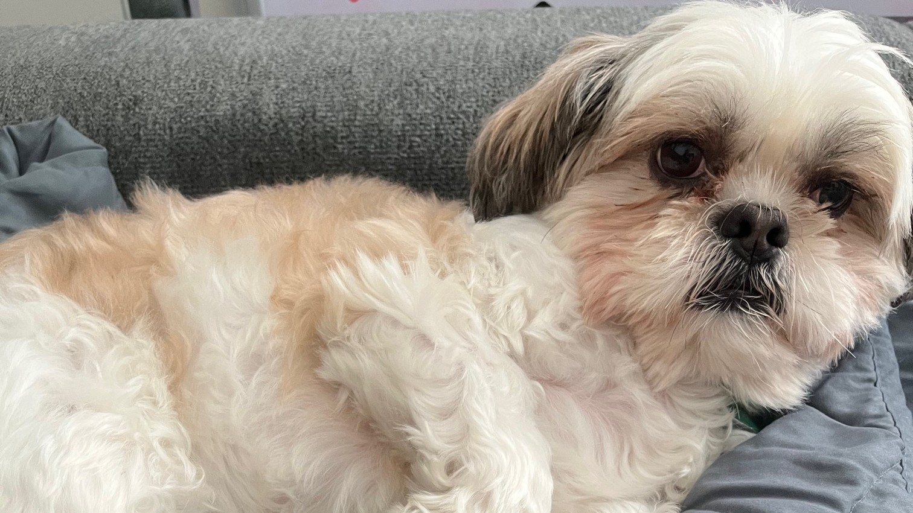

Testimonials
Here's what people have to say about Pebs:

"Pebbles has the face of a lion and social skills that put other dogs to shame. A queen bee who knows it, she’s the belle of every ball."
— Sam Stevenson, Aunt
"Pebbles' charm is in her waddle and her excitement over silly things like beans. She's the bestest girl!"
— Meline Rosales, Aunt/Babysitter
"10/10, would recommend."
— Nick, Roommate's ex-boyfriend
This thing is ridiculous!
— Some veterinary technician
"Pebbles helps me get through even the hardest days, even when you can tell she really just wants to be left alone. You'd be lucky to have her nipping at your ankles!"
— Chris Baggett, Writer/Culture Influencer
She's short, she's funny looking, and she's a terrible burden on her poor mother."
— Melanie Weir, Aunt
"She's fine, I guess."
— Noelle Corbett, Mother